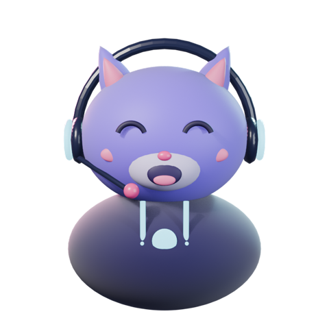
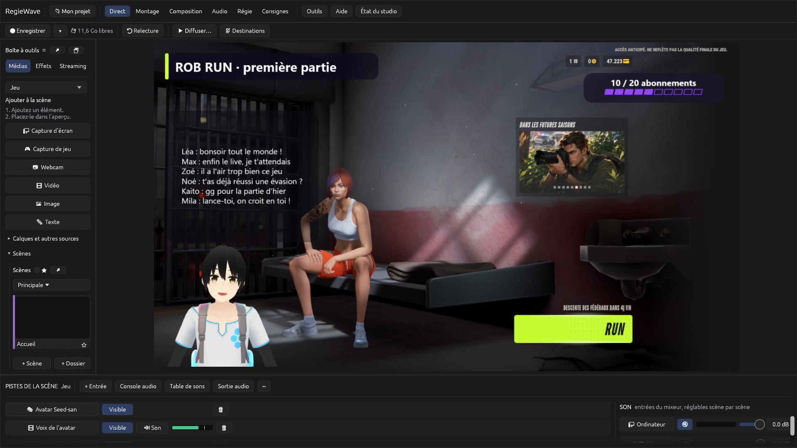
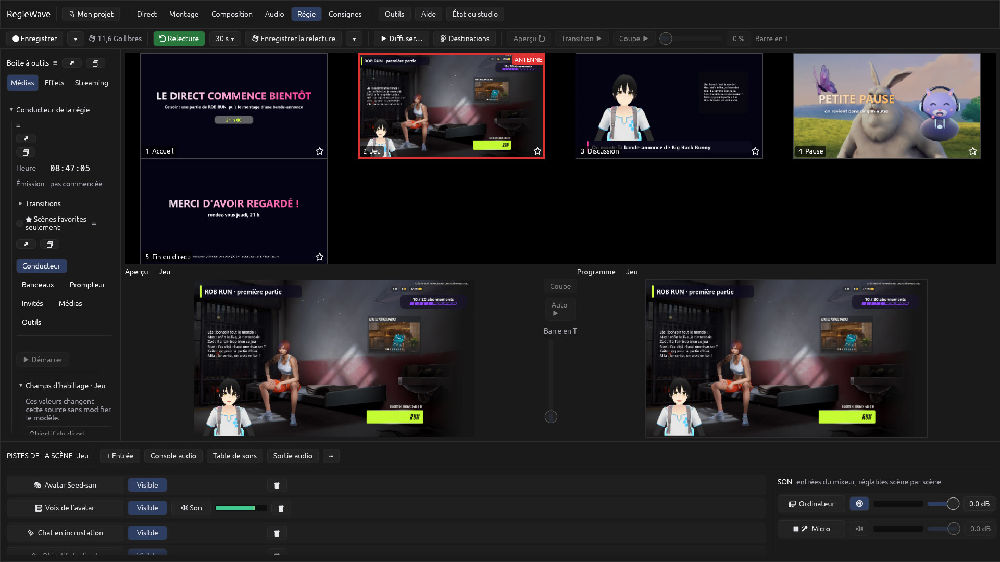
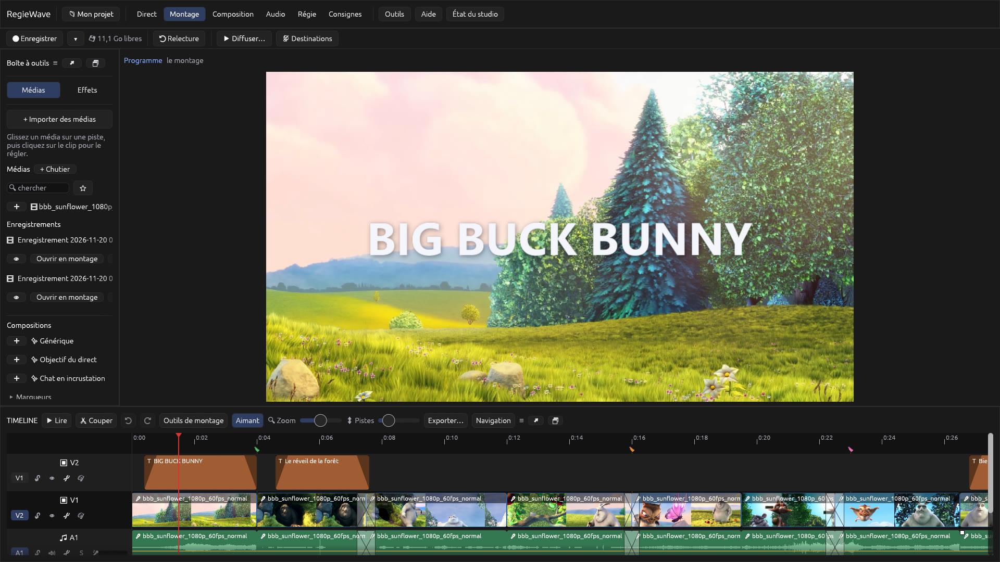
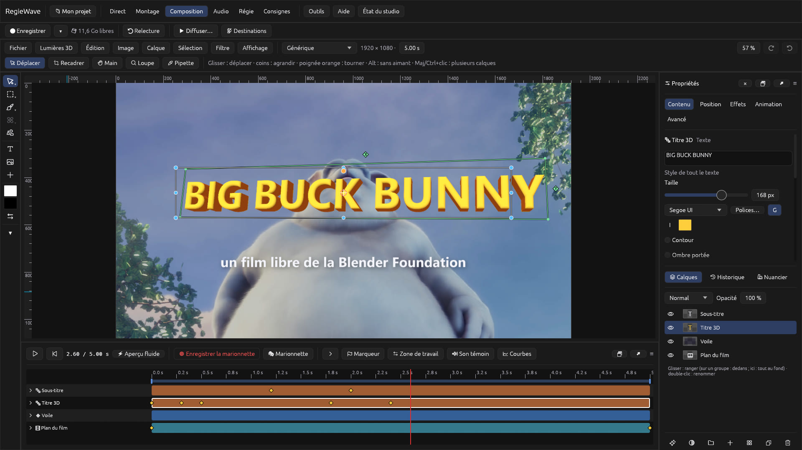

RegieWaveDiffusez comme avec OBS, réalisez comme en régie, montez vos vidéos et animez vos titres, sans changer de logiciel.
Windows 10 (1809) ou 11, 64 bits. En français, avec l'anglais en cours.

Tout ce que montre cette vidéo sort de RegieWave : l'enregistrement du direct pendant les changements de scène, puis une bande-annonce montée et rendue par RegieWave.
Les scènes du direct, les montages et les compositions vivent dans le même projet : un titre animé se crée une fois et sert partout.



Sans abonnement ni filigrane. Ce que vous créez vous appartient, y compris pour le monétiser.
Des réglages simples par défaut ; tout le reste se déplie quand vous en avez besoin.
RegieWave n'envoie aucune donnée à son auteur. Les clés de diffusion restent dans le coffre de Windows.
RegieWave est encore en développement : beaucoup de fonctions n'ont été essayées que sur un seul ordinateur, pas encore avec tous les modèles de webcams, micros, cartes graphiques et services de diffusion. Faites un essai avant un direct important, gardez une copie de vos projets et signalez les problèmes : c'est ce qui fait avancer le logiciel.
Dans la dernière version, prenez RegieWave-…-installation.exe. Tout est inclus : FFmpeg, Chromium pour les pages web, runtime Visual C++.
« Pour tous les utilisateurs » (caméra virtuelle comprise) ou « pour moi seulement », sans droits d'administrateur. L'installateur n'est pas encore signé : SmartScreen peut demander « Exécuter quand même ».
Mises à jour depuis RegieWave (Outils → Mises à jour…), vérifiées par leur empreinte SHA-256, avec retour possible à la version précédente.